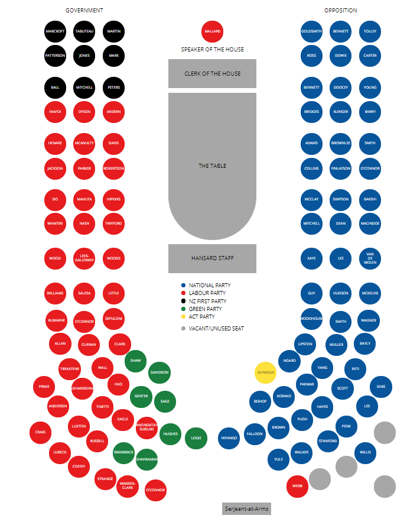

In Government 46 MPs “Everyone owns our water, but some have interests in it that others don’t. Large commercial users who profit from our water should pay a fair and affordable royalty – for example, water bottling companies. This revenue can help councils restore our waterways for future generations.” “Labour will set strong nationwide freshwater quality standards, including for pathogens, dissolved oxygen, nutrients, periphyton a.k.a. slime, and macroinvertebrate health. The National Policy Statement will stop water quality getting worse straight away. Water quality will begin improving within five years. Within a generation, we will reverse the damage that has been done to our fresh water, and make our rivers and lakes swimmable.” “A royalty on the commercial consumption of water will assist with the cost of keeping our water clean. Households and councils will not pay any water royalty.” “Labour will work with iwi to resolve Treaty water claims in a manner that respects iwi’s mana, and restores the mauri of our rivers and lakes.”
In Government 9 MPs [Manifesto inaccessible at this time]
In Government 8 MPs “The Green Party has a plan to support farmers to move to less polluting, more environmentally sustainable and more profitable ways of farming so that our rivers and lakes are safe to swim in and our drinking water from aquifers is protected.” “The simple fact is that we need fewer hooves on the land, creating less pollution for our waterways. Ten million dairy cows and beef cattle produce the same amount of waste as 141 million people, but without the same standards of waste treatment.” “We will put a levy on nitrate pollution from agriculture, starting with intensive dairying, and use the revenue raised to fund a package of game-changing support measures that farmers can use to reduce their impact on our environment.” “Our exports and consumers at home trust New Zealand’s clean, green brand, but the reality of our environment isn’t true to that. By creating an independent, sustainable farming accreditation system, farmers can leverage the good work they’re doing to achieve higher prices in export markets and give integrity to our clean, green brand.”
In Opposition 55 MPs “National’s smart, modern BlueGreen approach to conservation is about getting the entire country involved, combining the energy and enthusiasm of thousands of committed volunteers and the backing of business with the expertise and resources of the Government.”
In Opposition 1 MP “We believe that free markets, far from being incompatible with good environmental custodianship, are essential to it. It is wealthy countries (Prosperity), where people take ownership (Property Rights), people pay the true costs of valuable resources and pollutants alike (Pricing), and communities have opportunities to get out and make a difference (Private Initiative) that make the difference, that have the best records on the environment. These are ACT’s four P’s of smart environmentalism.” “Introduce better water management, where water rights are tradeable, giving owners greater incentives to conserve water and oppose pollution of it.”
